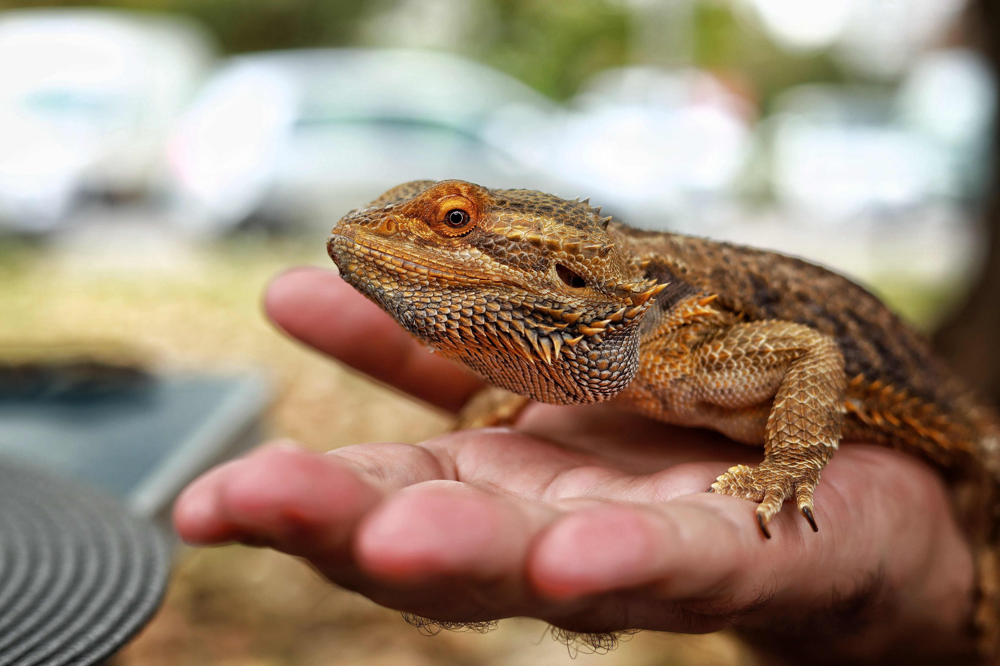
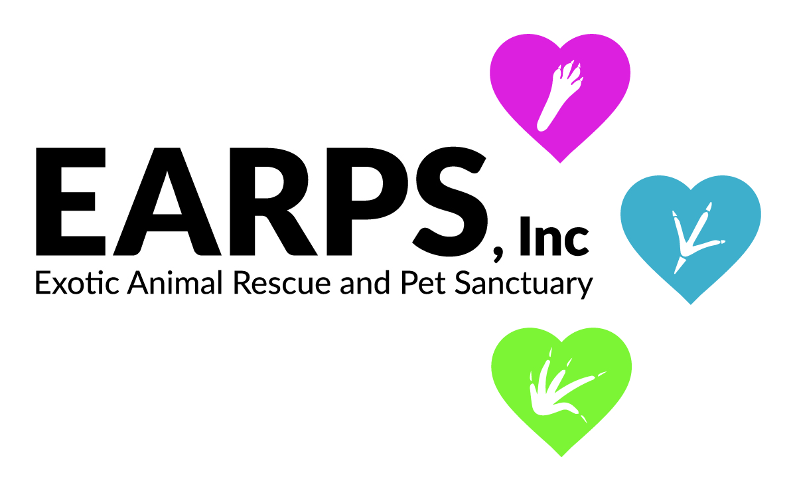

Welcome to the Exotic Pet Rescue!
Many people adopt animals and find they do not have the capacity to care for them. Our job is to provide a safe space for those animals to go when the situation arises. Rehome or Adopt animals through us.
We are a judgement free rescue, taking animals in with no questions asked. Rest assured that your animal will be taken care of with us.

Not all rescues remain in our facilities. Species we do not have experts to care for are relocated to a wildlife center or sanctuary who can provide the best quality of life to the animal.

This site is a work of fiction, if you are in need of rehoming an animal, consider the Exotic Animal Rescue and Pet Sanctuary. Click the link below.
EARPS Website